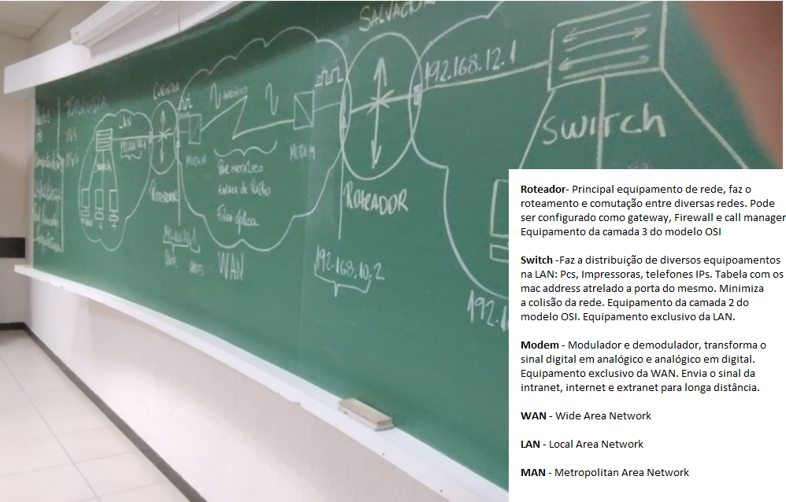
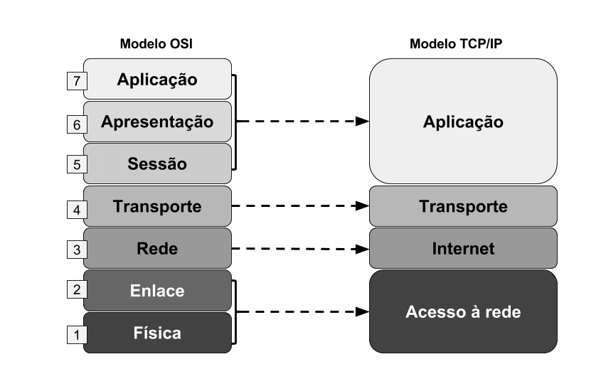
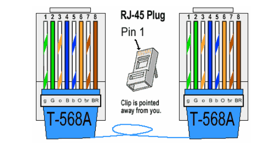
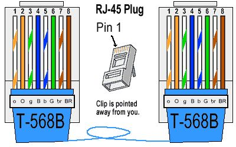

Observando o conteúdo abordado pela matéria de redes de computadores podemos notar que o setor de infraestrutura da tecnologia é de extrema importância para que os avanços continuem a seguir no Brasil e no mundo. Nestas aulas o professor frisou pontos importantes da área de infraestrutura. Assim iniciando o conteúdo pelos.
Contudo podemos dizer que tanto o modelo TCP/IP quanto o modelo OSI são conceituais, ou de referência, aplicados para descrever e modelar todas as comunicações nos ambientes rede, mesmo considerando o próprio TCP/IP como um importante protocolo adotado em todas as operações de Internet. Quando são abordadas as camadas 2, camada 3 ou camada 7 onde operam os dispositivos de rede, implicitamente é incluído o modelo OSI. Referenciado o modelo TCP/IP tanto na modelagem quanto arquitetura do serviço de Internet, provendo um conjunto de regras a serem empregadas por todas as formas de transmissão através de uma rede.
Com o conhecimento da divisão de camadas, podemos diagnosticar onde o problema está quando falha uma conexão. O princípio está em verificar a partir do nível mais baixo ao invés de partir do nível mais alto. Por cada camada inferior atender a uma camada mais elevada, será mais fácil lidar com problemas nas camadas inferiores. Por exemplo quando o computador não consegue conectar-se à Internet, a primeira ação está em verificar se o cabo de rede está conectado ao computador, ou se o ponto de acesso sem fio WAP (Wireless Access Point / AP – Ponto de Acesso para Rede Sem Fio) está conectado ao switch senão os conectores RJ45 estão em boas condições.
Tivemos aulas práticas e numa delas fizemos a crimpagem do cabo RJ-45 no padrão t568a.
 
O IPv4 e IPv6 são os protocolos responsáveis por identificar
computadores na Internet e garantir que as informações cheguem ao
destino correto. O sistema existe desde o início da rede, mas seu
crescimento exponencial levou a uma situação imprevista: a
existência de um número maior de dispositivos que os 4,3 milhões de
endereços IP disponíveis até então. Um endereço IPv4 possui o
formato x.x.x.x, em que x é chamado de octeto e deve ser um valor
decimal entre 0 e 255. Os octetos são separados por pontos. Um
endereço IPv4 deve conter três pontos e quatro octetos. Os exemplos
a seguir são endereços IPv4 válidos:
10.0.0.0 - 10011100010000
192.168.0.1 - 1001001010011100110100001
01.102.103.104 - 1000001101100001100001001000000
Para resolver a problema, várias soluções temporárias foram
exploradas, mas a chegada do IPv6 foi crucial para permitir uma
quantidade quase infinita de endereços, além de trazer mais
segurança e pacotes de dados maiores. Um endereço IPv6 (normal) tem
o formato y:y:y:y:y:y:y:y, em que y é chamado de segmento e pode ser
qualquer valor hexadecimal entre 0 e FFFF. Os segmentos são
separados por vírgulas, não por pontos. Um endereço IPv6 normal deve
ter oito segmentos.
A seguir estão exemplos de endereços IPv6 válidos:
2001 :db8:3333:4444:5555:6666:7777:8888
2001:db8:3333:4444:CCCC:DDDD:EEEE:FFFF
2001:db8:: (significa que os seis últimos segmentos são zero).
::1234:5678 (significa que os seis primeiros segmentos são zeros).
2001:db8::1234:5678 (significa que os quatro segmentos
intermediários são zeros).
2001:0db8:0001:0000:0000:0ab9:C0A8:0102 (isso pode ser compactado
para eliminar os zeros à esquerda, conforme a seguir:
2001:db8:1::ab9:C0A8:102 ).
O Cisco Packet Tracer é um poderoso simulador de rede para
treinamento de exames de certificação CCNA e CCNP, permitindo que os
alunos criem redes com um número quase ilimitado de dispositivos,
podendo assim imitar a realidade num ambiente corporativo.
CCNA - A certificação CCNA (Cisco Certified Network Associate) é uma
prova da CISCO SYSTEMS, uma companhia sediada em San Jose, na
Califórnia, cuja principal atividade é oferecer soluções para redes
e comunicações, fabricando roteadores e switches, além da prestação
de serviços de manutenção através de empresas parceiras.
CCNP - A certificação Cisco Certified Network Professional (CCNP),
na vertical tecnológica de Routing e Switching, é uma designação
concedida pelo fabricante Cisco e que atesta os conhecimentos,
habilidades e competências do profissional sobre a sua atuação em
questões de instalação física e lógica de equipamentos Cisco.
O NAT, que é o protocolo que vem sendo largamente utilizado por muitos administradores e seu conceito é sempre
alvo de discussões devido às questões de segurança que advêm da utilização desta técnica, mas também, nos últimos
tempos, devido à preocupação no uso do IPv6.
Sabendo que os IPs públicos (IPv4) são um recurso limitado e atualmente escasso, o NAT tem como objetivo poupar
o espaço de endereçamento público, recorrendo à IPs privados.
Os endereços públicos são geridos por uma entidade reguladora, são pagos, e permitem identificar
univocamente uma máquina (PC, routers etc.) na Internet.
Por outro lado, os endereços privados apenas fazem sentido num domínio local e não são conhecidos
(encaminháveis) na Internet, sendo que uma máquina configurada com um IP privado terá de sair para
a Internet através de um IP público.
Para configurar o NAT tradicional, precisamos fazer pelo menos uma interface em um roteador (NAT externo)
e outra interface no roteador (NAT interno) em um conjunto de regras para converter os endereços IP nos
cabeçalhos dos pacotes precisam ser configurados. Para configurar uma Nat Virtual Interface (NVI), precisamos
de pelo menos uma interface configurada com NAT habilitada junto com o mesmo conjunto de regras, conforme mencionado acima.
A figura mostra uma rede interna contendo um servidor web com um endereço IPv4 privado. O roteador R2 é
configurado com NAT estático para permitir que dispositivos na rede externa (Internet) acessem o servidor web.
NAT Estático um endereço privado é traduzido num endereço público.
Veremos agora o NAT dinâmico que mapeia automaticamente os endereços locais internos para os endereços globais internos.
Esses endereços globais internos são normalmente endereços IPv4 públicos. O NAT dinâmico, como o NAT estático, requer a
configuração das interfaces internas e externas que participam do NAT com os comandos de configuração da interface.
No entanto, o NAT dinâmico usa um pool de endereços
NAT Overload (PAT) é certamente a técnica mais usada. Um exemplo de PAT é quando temos 1 único
endereço público e por ele conseguimos fazer sair várias máquinas. Este processo é conseguido, uma
vez que o equipamento que faz PAT utiliza portas que identificam univocamente cada pedido das máquinas
locais, O PAT é a técnica presente na maioria dos equipamentos de rede que usamos. Considerando por
exemplo um router WiFi. É possível ligarmos/associarmos vários clientes a esse equipamento e estes são
configurados a um endereço privado.
Segue imagem: